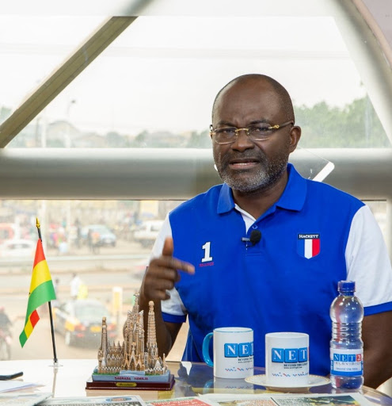

Hon. Kennedy Ohene Agyapong
A Politician whose life is climaxed with love for truth and Ghana.

"
I started hawking in the streets
selling PK, Robb, Razors.
You can make it too, all it takes is
a little hard work and dedication. "
selling PK, Robb, Razors.
You can make it too, all it takes is
a little hard work and dedication. "
Hon. Kennedy Ohene Agyapong, has helped a lot of Ghanaians in need - part of his life-long hunger for development of Ghana.
Here is some timeline of Hon. Kennedy Ohene Agyapong's life:
- Born in Assin Dompim, Central Region of Ghana
- He had his secondary education at Adisadel College in the Central Region. Agyapong holds a GCE A Level and studied in the Fordham University, New York, USA
- He was the first to introduce American lottery to Ghana which aided some Ghanaians to travel abroad
- Kennedy Agyapong still remains one of the politicians who have never lost election.
- Pays school fees for several Ghanaian students and also provide for other needs of these students
- He always makes sure to use any platform he gets to advice the youths. As a result, he's seen as a role model to many of them.
- He made serveral donations during the lockdown period of Covid-19
- Kennedy Agyapong mobilises $428,000 for evacuation of stranded Ghanaians from Lebanon
“It’s the action, not the fruit of the action, that’s important. You have to do the right thing. It may not be in your power, may not be in your time, that there’ll be any fruit. But that doesn’t mean you stop doing the right thing. You may never know what results come from your action. But if you do nothing, there will be no result.”– Mahatma Gandhi
If you have time, you should read about this incredible Politician on his Wikipedia entry.